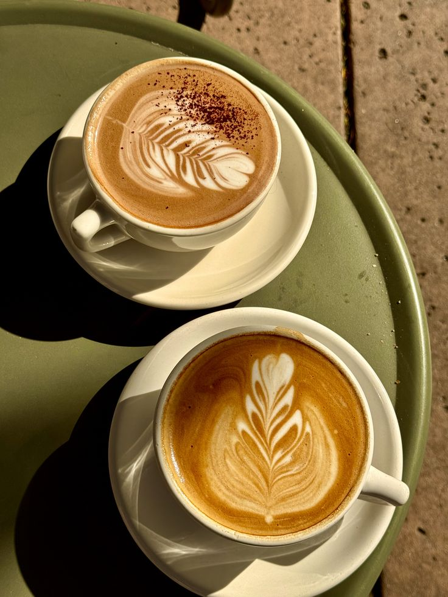
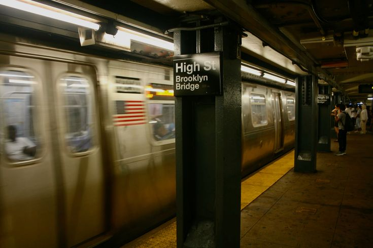
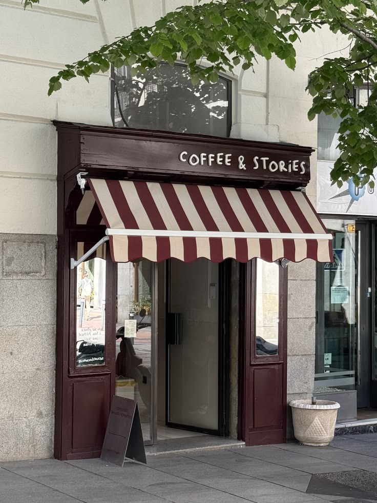
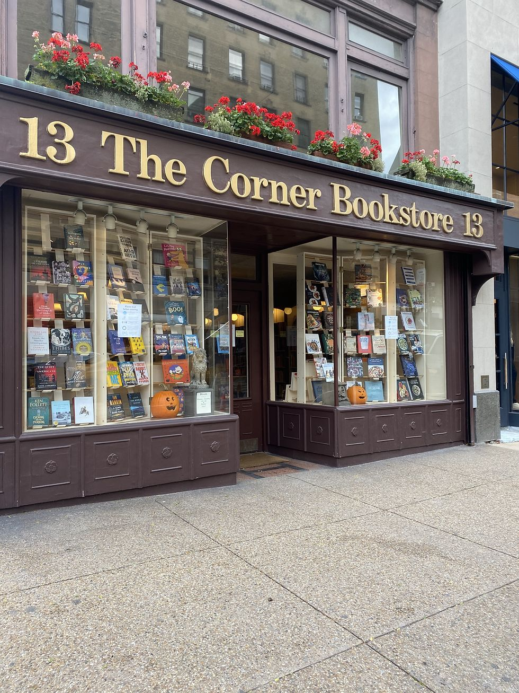
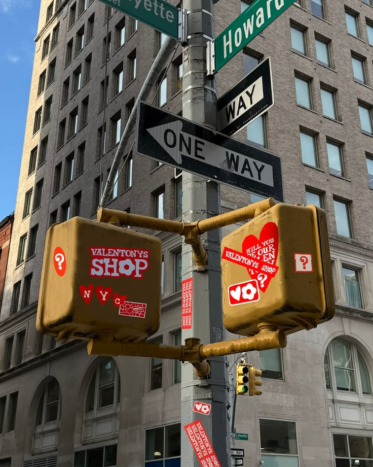
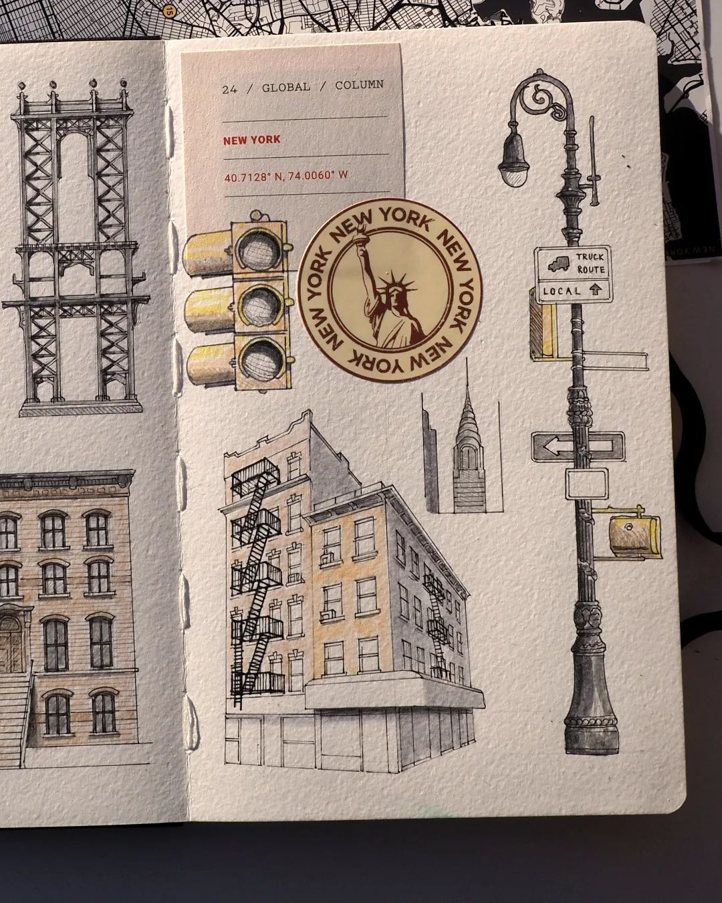

Ingredients
- 1 cup of coffee
- 1 pair of headphones
- 1 subway ride
- 1 new café
- 1 random store
- 1 photo
- 1 unexpected moment
Start with coffee.

Start your day with a cup of coffee.
01 — Choose a playlist
Put on your headphones and choose a playlist .
02 — Take the subway

Take the subway to a different neighborhood.
View the New York City subway map →03 — Find a café

Visit a café and stay for 15 minutes.
Find a café in New York →04 — Find a random store

Enter a random store that catches your attention.
05 — Take a photo

Take a photo of something interesting.
06 — Notice something unexpected

Notice one unexpected moment.
07 — Write about your day

Write one sentence about your day.
Write your sentence here →